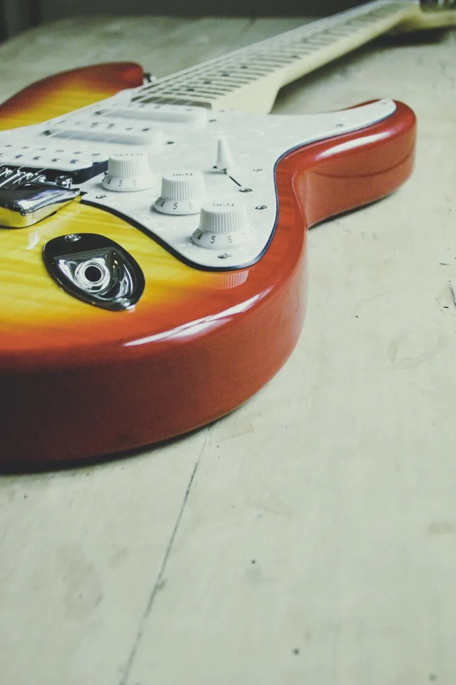
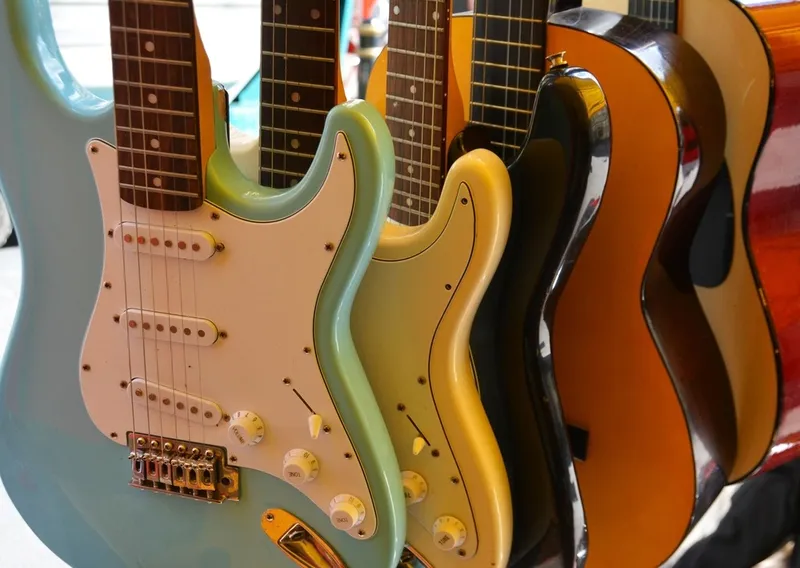
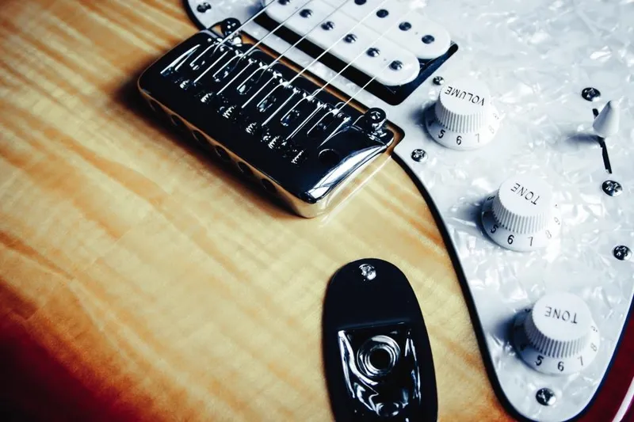
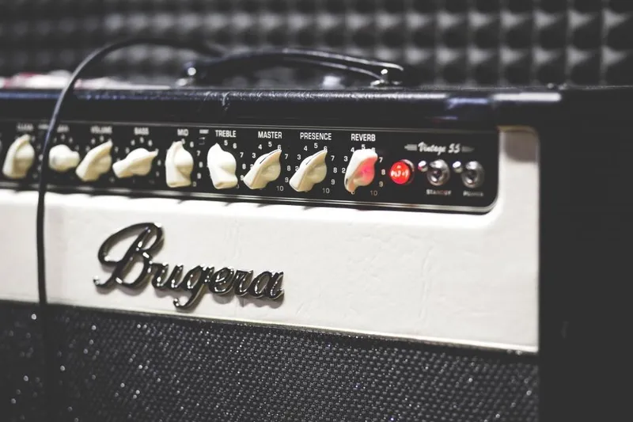

Guitarra eléctrica para principiantes: las 3 mejores
Actualizado el
Elegir tu primera guitarra eléctrica para principiantes es más sencillo de lo que parece si sabes qué mirar: que sea cómoda, que afine bien y que no tengas que gastar de más en cosas que todavía no necesitas. Hemos comparado los modelos más recomendados para quien empieza desde cero y nos hemos quedado con tres: uno para cada tipo de comprador.
Si todavía dudas entre eléctrica y española, antes echa un vistazo a nuestra guía sobre guitarra española o acústica.
Comparativa rápida de las 3 guitarras
| Modelo | Ideal para | ¿Incluye amplificador? | Precio aprox. |
|---|---|---|---|
| Yamaha Pacifica 012 | Quien busca calidad sin gastar mucho | No | 190–280 € |
| Squier Sonic Stratocaster Pack | Quien quiere todo en una caja | Sí (Fender Frontman 10G) | 250–395 € |
| Donner DST-80 | El presupuesto más ajustado | Sí | ~160 € |
Las 3 mejores guitarras eléctricas para principiantes
1. Yamaha Pacifica 012: la mejor calidad-precio

Es la guitarra que más recomiendan los profesores para empezar, y con razón: Yamaha cuida mucho los acabados incluso en sus modelos baratos. Afina bien, el mástil es cómodo y suena con personalidad, desde sonidos limpios hasta rock con distorsión. Es una guitarra que no se queda corta cuando mejoras.
Ventajas
- Muy buena calidad de fabricación para su precio
- Mástil cómodo para manos que empiezan
- Sonido versátil: sirve para casi cualquier estilo
Inconvenientes
- No incluye amplificador ni funda: hay que comprarlos aparte
2. Squier Sonic Stratocaster Pack: el pack más completo

Squier es la marca económica de Fender, y este pack trae la forma de guitarra más famosa de la historia, la Stratocaster. Lo mejor es que viene con todo lo necesario para empezar a tocar el primer día: amplificador Fender Frontman 10G, cable, correa, púas y funda.
Ventajas
- Todo incluido: no tienes que comprar nada más
- Amplificador de una marca reconocida
- Mástil fino, muy cómodo para principiantes
Inconvenientes
- Es la opción más cara de las tres
- El amplificador de 10 W se queda pequeño para tocar con otros músicos
3. Donner DST-80: la más barata con todo incluido

Si no sabes si la guitarra te va a enganchar y no quieres arriesgar mucho dinero, este kit es la forma más barata de probar. Por unos 160 € tienes guitarra, amplificador y accesorios. No suena como las otras dos, pero cumple de sobra para aprender los primeros acordes.
Ventajas
- El precio más bajo con amplificador incluido
- Buena opción para regalar sin gastar mucho
Inconvenientes
- Acabados más sencillos: puede necesitar un ajuste para que afine bien
- Si avanzas rápido, probablemente quieras cambiarla antes
¿Qué guitarra eléctrica comprar si eres principiante?
Cuánto gastar en tu primera guitarra eléctrica
Entre 150 y 300 € es la franja donde está el equilibrio. Por debajo, muchas guitarras tienen trastes mal acabados o no mantienen la afinación, y eso se nota justo cuando más cuesta aprender. Por encima, pagas detalles que un principiante todavía no aprovecha.
¿Pack con amplificador o guitarra sola?
Una guitarra eléctrica sin amplificador apenas suena, así que lo vas a necesitar sí o sí. Si compras la guitarra sola, como la Pacifica, cuenta con unos 60–100 € más para un amplificador pequeño. Un pack te ahorra dinero y decisiones; la guitarra sola te deja elegir mejor cada pieza.

Preguntas frecuentes
¿Es más difícil empezar con eléctrica que con española?
No, en muchos casos es más fácil. Las cuerdas de una eléctrica son más finas y el mástil más estrecho, así que cuesta menos hacer los acordes. La española tiene cuerdas de nailon, más blandas para los dedos, pero un mástil más ancho. Lo que más importa es elegir la guitarra de la música que te gusta: es lo que te hará practicar.
¿Sirve para principiantes adultos?
Sí. Las tres guitarras de esta lista son de tamaño completo (4/4), pensadas para adultos y adolescentes. Nunca es tarde para empezar en la música: muchos adultos aprenden más rápido porque practican con más constancia. Si buscas una para un niño, mira nuestra guía de guitarras para niños según la edad.